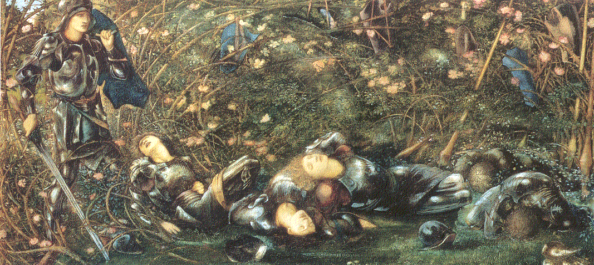

Listen to 'Crystal of a bird' in English

XXVI CRISTAL D'OISEAU
Ce sont d'étranges lieux pour d'invisibles fêtes.
Hôtes de mes forêts, déguisez-vous en voix.
Déjà ont assombri leurs sentes et leurs lois
Ces domaines hantés par mes bandes défaites.
La musique se lève où tonnait le prophète.
Je n'ai pas oublié les rites d'autrefois,
Mais les mots désormais sont des cerfs aux abois.
Leurs hardes en fuyant révèleront mes faîtes.
Fontaines de l'instant, vous m'emplissez de nuit.
Déjà l'eau qui s'écoule et la houle qui fuit.
Mon vol triomphera du poids qui m'entremêle.
Oh, quand viendra le temps où, tous mats abattus,
Je serai le vaisseau vainqueur pour s'être tu,
Ayant conquis le point où cessent chant et aile.
Michel Galiana (c) 1991
XXVI CRYSTAL OF A BIRD
For an invisible festival a strange place!
Ye, dwellers of my woods, must dress up as echoes.
Footpaths and thoroughfares are filling with shadows
In these estates haunted by my disbanded mates.
Music shall rise there where a prophet once thundered.
But I will not forget the rites of times gone-by,
And hence the words are like deer and does brought to bay.
Their herds, once put to flight, will disclose my covers.
Fountains of flowing time, you're filling me with night.
I scent the ebbing wave as well as the swell's flight.
My soaring shall triumph over my ball and chain.
O may the time come when, a ship deprived of mast,
Through obstinate silence I shall prevail at last
And have conquered the point where song and wing are vain!
Transl. Christian Souchon 01.01.2004 (c) (r) All rights reserved
Encore une longue suite d'images et de symboles qui, semble-t-il ont toutes un lien avec l'inspiration poétique et l'affirmation que seul le poète est capable de pleinement exprimerla réalité des choses.
Again, a long concatenation of images and symbols. Apparently they are all connected with poetic inspiration and with the fact that only a poet may completely account for reality
Listen to 'Crystal of a bird' in English